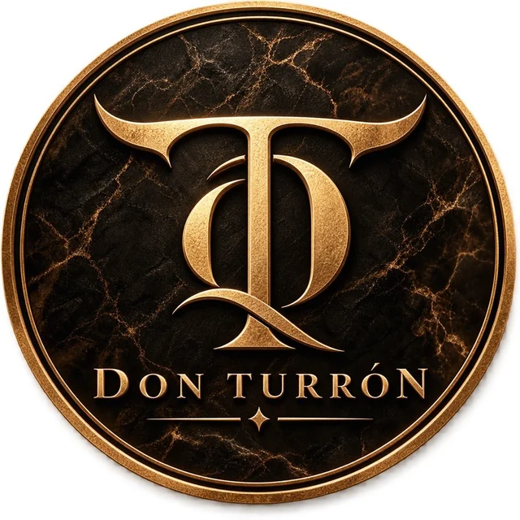

NUEVA PIEZA
HUMIDORES
Humidor de viaje para 5 puros
Para llevar hasta cinco puros.
$649 MXNIVA incluido
Hay cosas que elegimos por lo útiles que son. Otras, simplemente porque nos gustan. Y algunas tienen un poco de las dos. En Don Turrón comenzamos con accesorios para puros y queremos seguir encontrando cosas que nos guste usar, disfrutar y compartir.
NUESTRA PRIMERA SELECCIÓN
Nos gustan las cosas que se disfrutan tanto por su diseño como por su utilidad. Aquí encontrarás nuestra selección de accesorios, empezando por los esenciales para puros.
Ocho accesorios documentados. Cinco con precio al público en MXN e IVA incluido; envío no incluido. Existencias por confirmar.
La distinción no necesita hacer ruido.
Se reconoce en los detalles.
NUESTRA PRIMERA SELECCIÓN
Empezamos por algo que nos gusta: los accesorios para puros. Estuches, humidores y herramientas para disfrutar esos momentos a nuestra manera. Por ahora, te invitamos a conocer nuestra primera selección.
Para llevar hasta cinco puros.
Cenicero y tres herramientas de corte.
1 unidad disponible
Para guardar tus puros cuando viajas.
1 unidad disponible
Para llevar puros y accesorios.
1 unidad disponible
Un lugar para apoyar tu puro.
Plata: 2 disponibles · Negro: 1 disponible
Una pieza compacta para preparar el corte.
Disponibilidad prevista: enero de 2027
Flama suave y jet en una sola pieza.
Disponibilidad prevista: enero de 2027
Doble flama jet y cortador punch en una sola pieza.
Disponibilidad prevista: enero de 2027
Así comienza nuestra colección.
ESTUCHES · HUMIDORES · ACCESORIOS
NUESTRA ESENCIA
Creemos que el estilo personal no se define por cuánto se tiene, sino por aquello que se elige.
Don Turrón nace del gusto por los objetos que combinan funcionalidad, diseño y carácter. Piezas que encontramos interesantes, que tienen un propósito y que pueden acompañarnos en distintos momentos de la vida. Nuestra intención es construir una colección que evolucione con el tiempo, incorporando accesorios y experiencias que compartan una misma filosofía: elegir con criterio, apreciar los detalles y disfrutar de lo cotidiano con personalidad.
Descubre la experiencia ↗DT / 001CÓMO FUNCIONA EL CATÁLOGO
Queremos que elegir sea sencillo. Aquí puedes conocer cada accesorio, ver sus detalles y guardar una selección para tenerla a la mano. Por ahora, no se realizan pedidos ni pagos en este sitio. Los precios publicados incluyen IVA y no incluyen envío; las existencias, el importe total y la entrega se confirman por WhatsApp antes del pago.
Revisa las categorías y conoce cada accesorio.
Guarda los accesorios que te interesan en tu selección.
Envía tu selección por WhatsApp para confirmar existencias, importe final y opciones de pago.
INFORMACIÓN ÚTIL
Elige los accesorios de tu interés, agrégalos a Mi selección y envíala por WhatsApp. Confirmaremos las existencias, el importe total y el envío antes de indicarte cómo pagar. El sitio no procesa pagos directamente.
Actualmente operamos desde la Ciudad de México y realizamos envíos a CDMX y su zona metropolitana. El costo de envío es de $500 MXN por pedido, adicional al precio de los productos.
Sí. Si realizas tu compra antes de las 15:00 horas y se confirman tanto las existencias como el pago dentro de ese horario, recibirás tu pedido el mismo día en nuestra zona de cobertura. Si el pago se confirma después, coordinaremos una nueva fecha de entrega.
Después de confirmar las existencias y el costo total, te enviaremos un enlace de pago para tarjeta de crédito o débito. Si el pago queda confirmado antes de las 15:00 horas, la entrega se realiza el mismo día dentro de nuestra zona de cobertura.
Sí. Te compartiremos las instrucciones para pagar en los establecimientos participantes, como OXXO, 7-Eleven, Walmart o Bodega Aurrera. El pedido se enviará únicamente después de que el pago esté confirmado; por ello, la entrega el mismo día depende de cuándo se reciba esa confirmación.
No. Por ahora, Don Turrón no cuenta con una boutique física: la selección de productos, la atención y la coordinación de compras se realizan mediante nuestros canales digitales.
Don Turrón es operado por RAUVIA. Actualmente la operación comercial se realiza de forma digital desde la Ciudad de México.
El alcance de este sitio es la exhibición de accesorios para puros. No se ofrecen puros ni tabaco a través de este catálogo.